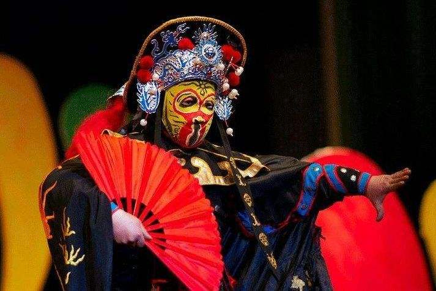

川剧有很多绝活，其中“变脸”、“喷火”、“水袖”是川剧的三大绝活。除此之外还有滚灯，踢慧眼，绳索功等等。
《滚灯》是川剧中久负盛名的独门绝技，川剧小丑剧的经典之作，川剧绝活。西谚有云：“一个小丑进城，胜过一打医生”。
由演员把点燃的油灯顶在头上，做各样的动作，而不能让灯掉下来，全剧由一组组高难惊险的动作，如：翻跟斗、从板凳下钻过等，推动故事情节的发展，使观者在惊叹之中又处处令人捧腹。代表剧目《皮金滚灯》是川剧中有名的小丑戏。《皮金滚灯》讲述了纨绔子弟皮筋因赌博成性受到妻子责罚的故事。其妻让他头顶油灯在板凳上翻上翻下，做出种种高难度的动作，整个表演幽默诙谐，其中头上走灯、头上吹灯、顶灯倒立等高难度动作展现了川剧艺术独特的魅力。